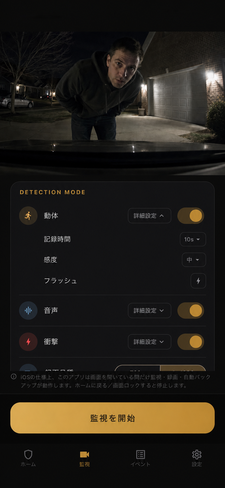

動体検知
カメラ画角内の人の動きを監視し、意味のある変化を検知するためにオンデバイス処理を使います。
証拠保全
Parking Guardは、使わなくなったスマホを使って、トラブルの前後を確認できる動画と静止画を残すことに集中した駐車監視アプリです。


使い方
ダッシュボード、フロントガラス、車内マウントなどから、接触やいたずらが起きやすい方向を映します。
動体、音声、衝撃のうち必要な検知を選びます。各検知モードの感度も3段階で選択可能です。バッテリー消費量削減のため、カメラビューのOFFや画面全体の低照度化も可能です。
検知すると、検知した瞬間の静止画撮影に加えて、検知の3秒前に遡って動画の録画を開始し、検知後の録画時間は10秒、20秒、30秒から選択可能です。
イベントはオフラインでも確認できます。画像・動画を写真ライブラリへ保存したり、任意でGoogle DriveへのバックアップやGmailへの通知もできます。

検知
駐車中の出来事は一つのきっかけだけでは捉えきれません。Parking Guardは動体・音声・衝撃を個別にON/OFFし、感度も調整できます。また、検知した瞬間にあなたのGmailに通知することができます。
カメラ画角内の人の動きを監視し、意味のある変化を検知するためにオンデバイス処理を使います。
接触音や衝突音のような大きな音からささやき声のような小さな音まで、端末のマイク入力の音圧で検知します。
端末の加速度センサーで、接触や揺れによる衝撃を検知します。ドライブレコーダーとして使う場合は、通常走行の揺れでは検知しないように感度を弱に設定することも可能です。
いずれかのモードで検知した際にスマホのフラッシュライトを最大照度で点滅させることも可能です。フラッシュライトを点滅させる際の検知モードは選択可能です。

プライバシー
Parking Guardは端末内保存を中心に設計していますので、オフラインでも利用可能です。駐車中の動画はあなたのスマホに保存するかGoogle Driveに自動バックアップすることができます。その他には一切送信されません。
制約
信頼できるアプリであるために、できることだけでなく制約も明確に伝えます。
iOSの仕様により、iPhone版はアプリを開いている間だけ監視できます。ホームに戻る、または画面ロックすると監視は停止します。
主な用途は食事、買い物、用事、集合住宅の駐車場など、短時間監視がお勧めです。夏場高温になる車内での長時間の利用はお勧めしません。
低RAM端末（2GB以下）では、遡り録画時間や画質を自動調整して動作負荷を抑えます。
FAQ
ドライブレコーダーの駐車監視、余ったスマホのカメラアプリ、車の防犯アプリと比較するときの要点です。
完全な代替ではありません。Parking Guardは余ったスマホを使い、駐車中に証拠を残す用途に特化しています。常時録画や走行中録画は専用ドラレコが向いています。
当て逃げ、ドアパンチ、いたずら、車への接触、盗難未遂など、あとから動画や静止画で状況確認したい駐車中のトラブルを想定しています。
はい。証拠はまず端末内に保存されます。インターネットが必要なのは、任意のGoogle DriveバックアップやGmail通知を使う場合です。
英語、ドイツ語、スペイン語、日本語に対応します。
料金
Parking Guardは月額980円で利用できます。